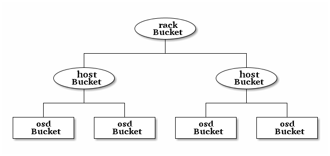

CRUSH 图¶
CRUSH 算法通过计算数据存储位置来确定如何存储和检索。 CRUSH 授权 Ceph 客户端直接连接 OSD ，而非通过一个中央服务器或经纪人。数据存储、检索算法的使用，使 Ceph 避免了单点故障、性能瓶颈、和伸缩的物理限制。
CRUSH 需要一张集群的地图，且使用 CRUSH 把数据伪随机地存储、检索于整个集群的 OSD 里。 CRUSH 的讨论详情参见 CRUSH - 可控、可伸缩、分布式地归置多副本数据 。
CRUSH 图包含 OSD 列表、把设备汇聚为物理位置的“桶”列表、和指示 CRUSH 如何复制存储池里的数据的规则列表。由于对所安装底层物理组织的表达， CRUSH 能模型化、并因此定位到潜在的相关失败设备源头，典型的源头有物理距离、共享电源、和共享网络，把这些信息编码到集群运行图里， CRUSH 归置策略可把对象副本分离到不同的失败域，却仍能保持期望的分布。例如，要定位同时失败的可能性，可能希望保证数据复制到的设备位于不同机架、不同托盘、不同电源、不同控制器、甚至不同物理位置。
当你写好配置文件，用 ceph-deploy 部署 Ceph 后，它生成了一个默认的 CRUSH 图，对于你的沙盒环境来说它很好。然而，部署一个大规模数据集群的时候，应该好好设计自己的 CRUSH 图，因为它帮你管理 Ceph 集群、提升性能、和保证数据安全性。
例如，如果一个 OSD 挂了， CRUSH 图可帮你定位此事件中 OSD 所在主机的物理数据中心、房间、行和机架，据此你可以请求在线支持或替换硬件。
类似地， CRUSH 可帮你更快地找出问题。例如，如果一个机架上的所有 OSD 同时挂了，问题可能在于机架的交换机或电源，而非 OSD 本身。
定制的 CRUSH 图也能在归置组降级时，帮你找出冗余副本所在主机的物理位置。
Note
文本框里的代码实例可能超出了边界，读或拷贝时注意滚动。
CRUSH 位置¶
用 CRUSH 图层次结构所表示的 OSD 位置被称为“ crush 位置”，它用键/值对列表来表示。例如，一 OSD 位于某特定行、机柜、机架、和主机，且是 CRUSH 图里名为 default 树的一部分，那么其 crush 位置可表示如下：
root=default row=a rack=a2 chassis=a2a host=a2a1
注：
- 注意键（关键词）与顺序无关；
- 键名（
=左边）必须是 CRUSH 内的合法type，默认情况下，它包含 root 、 datacenter 、 room 、 row 、 pod 、 pdu 、 rack 、 chassis 、和 host ，但这些类型可修改 CRUSH 图任意定义。 - 并非所有键都需指定，例如，默认情况下 Ceph 会自动把
ceph-osd守护进程的位置设置为root=default host=HOSTNAME（即是hostname -s）。
ceph-crush-location 挂钩¶
ceph-crush-location 工具可为某守护进程生成默认 CRUSH 位置字符串，此位置依次基于：
- ceph.conf 里的
TYPE crush location，例如这是 OSD 守护进程的：osd crush location； - ceph.conf 里的
crush location； - 默认的
root=default host=HOSTNAME，其中主机名由hostname -s获取。
典型部署场景下，部署软件（或系统管理员）会在此主机的
ceph.conf 配置文件里设置 crush location 字段来描述此机器在数据中心或集群内的位置。这样 Ceph 守护进程和客户端就能感知位置。
完全手动管理 CRUSH 图也是可能的，在配置中把挂钩关掉即可：
osd crush update on start = false
定制位置挂钩¶
定制的位置挂钩可代替通用挂钩，用于控制 OSD 在分级结构中的位置（启动时，各 OSD 都确认它们的位置正确无误）：
osd crush location hook = /path/to/script
此挂钩应该接受几个参数（下述）并向标准输出打印一行 CRUSH 位置描述：
$ ceph-crush-location --cluster CLUSTER --id ID --type TYPE
其中，集群名通常是 ceph ， id 是守护进程标识符（ OSD 号），守护进程类型通常是 osd 。
编辑 CRUSH 图¶
要编辑现有的 CRUSH 图：
- 获取 CRUSH 图；
- 反编译 CRUSH 图；
- 至少编辑一个设备、桶、规则；
- 重编译 CRUSH 图；
- 注入 CRUSH 图。
要激活 CRUSH 图里指定存储池的规则，找到那些规则的通用规则集编号，然后把它指定给那个存储池。详情参见调整存储池。
获取 CRUSH 图¶
要获取集群的 CRUSH 图，执行命令：
ceph osd getcrushmap -o {compiled-crushmap-filename}
Ceph 将把 CRUSH 输出（ -o ）到你指定的文件，由于 CRUSH 图是已编译的，所以编辑前必须先反编译。
反编译 CRUSH 图¶
要反编译 CRUSH 图，执行命令：
crushtool -d {compiled-crushmap-filename} -o {decompiled-crushmap-filename}
Ceph 将反编译（ -d ）二进制 CRUSH 图，且输出（ -o ）到你指定的文件。
编译 CRUSH 图¶
要编译 CRUSH 图，执行命令：
crushtool -c {decompiled-crush-map-filename} -o {compiled-crush-map-filename}
Ceph 将把已编译的 CRUSH 图保存到你指定的文件。
注入 CRUSH 图¶
要把 CRUSH 图应用到集群，执行命令：
ceph osd setcrushmap -i {compiled-crushmap-filename}
Ceph 将把你指定的已编译 CRUSH 图输入到集群。
CRUSH 图参数¶
CRUSH 图主要有 4 个主要段落。
- 设备 由任意对象存储设备组成，即对应一个
ceph-osd进程的存储器。 Ceph 配置文件里的每个 OSD 都应该有一个设备。 - 桶类型： 定义了 CRUSH 分级结构里要用的桶类型（
types），桶由逐级汇聚的存储位置（如行、机柜、机箱、主机等等）及其权重组成。 - 桶例程： 定义了桶类型后，还必须声明主机的桶类型、以及规划的其它故障域。
- 规则： 由选择桶的方法组成。
如果你用我们的某个“入门手册”配起了 Ceph ，应该注意到了，你并不需要创建 CRUSH 图。 Ceph 部署工具生成了默认 CRUSH 运行图，它列出了你定义在 Ceph 配置文件中的 OSD 设备、并把配置文件 [osd] 段下定义的各 OSD 主机声明为桶。为保证数据安全和可用，你应该创建自己的 CRUSH 图，以反映出自己集群的故障域。
Note
生成的 CRUSH 图没考虑大粒度故障域，所以你修改 CRUSH 图时要考虑上，像机柜、行、数据中心。
CRUSH 图之设备¶
为把归置组映射到 OSD ， CRUSH 图需要 OSD 列表（即配置文件所定义的 OSD 守护进程名称），所以它们首先出现在 CRUSH 图里。要在 CRUSH 图里声明一个设备，在设备列表后面新建一行，输入
device 、之后是唯一的数字 ID 、之后是相应的 ceph-osd
守护进程例程名字。 device 类支持可选参数 class ，用以对设备分组，这样就可以让 crush 规则方便地引用。
#devices
device {num} {osd.name} [class {class}]
例如：
#devices
device 0 osd.0 class ssd
device 1 osd.1 class hdd
device 2 osd.2
device 3 osd.3
一般来说，一个 OSD 映射到一个单独的硬盘或 RAID 。
CRUSH 图之桶类型¶
CRUSH 图里的第二个列表定义了 bucket （桶）类型，桶简化了节点和叶子层次。节点（或非叶子）桶在分级结构里一般表示物理位置，节点汇聚了其它节点或叶子，叶桶表示 ceph-osd 守护进程及其对应的存储媒体。
Tip
CRUSH 中用到的 bucket 意思是分级结构中的一个节点，也就是一个位置或一部分硬件。但是在 RADOS 网关接口的术语中，它又是不同的概念。
要往 CRUSH 图中增加一种 bucket 类型，在现有桶类型列表下方新增一行，输入 type 、之后是惟一数字 ID 和一个桶名。按惯例，会有一个叶子桶为 type 0 ，然而你可以指定任何名字（如 osd 、 disk 、 drive 、 storage 等等）：
#types
type {num} {bucket-name}
例如：
# types
type 0 osd
type 1 host
type 2 chassis
type 3 rack
type 4 row
type 5 pdu
type 6 pod
type 7 room
type 8 datacenter
type 9 region
type 10 root
CRUSH 图之桶层次¶
CRUSH 算法根据各设备的权重、大致统一的概率把数据对象分布到存储设备中。 CRUSH 根据你定义的集群运行图分布对象及其副本， CRUSH 图表达了可用存储设备以及包含它们的逻辑单元。
要把归置组映射到跨故障域的 OSD ，一个 CRUSH 图需定义一系列分级桶类型（即现有 CRUSH 图的 #type 下）。创建桶分级结构的目的是按故障域隔离叶节点，像主机、机箱、机柜、电力分配单元、机群、行、房间、和数据中心。除了表示叶节点的 OSD ，其它分级结构都是任意的，你可以按需定义。
我们建议 CRUSH 图内的命名符合贵公司的硬件命名规则，并且采用反映物理硬件的例程名。良好的命名可简化集群管理和故障排除，当 OSD 和/或其它硬件出问题时，管理员可轻易找到对应物理硬件。
在下例中，桶分级结构有一个名为 osd 的分支、和两个节点分别名为 host 和 rack 。

Note
编号较高的 rack 桶类型汇聚编号较低的 host 桶类型。
位于 CRUSH 图起始部分、 #devices 列表内是表示叶节点的存储设备，没必要声明为桶例程。位于分级结构第二低层的桶一般用于汇聚设备（即它通常是包含存储媒体的计算机，你可以用自己喜欢的名字描述，如节点、计算机、服务器、主机、机器等等）。在高密度环境下，经常出现一机框内安装多个主机/节点的情况，因此还要考虑机框故障——比如，某一节点故障后需要拉出机框维修，这会影响多个主机/节点和其内的 OSD 。
声明一个桶例程时，你必须指定其类型、惟一名称（字符串）、惟一负整数 ID （可选）、指定和各条目总容量/能力相关的权重、指定桶算法（通常是 straw ）、和哈希（通常为 0 ，表示散列算法 rjenkins1 ）。一个桶可以包含一到多条，这些条目可以由节点桶或叶子组成，它们可以有个权重用来反映条目的相对权重。
你可以按下列语法声明一个节点桶：
[bucket-type] [bucket-name] {
id [a unique negative numeric ID]
weight [the relative capacity/capability of the item(s)]
alg [the bucket type: uniform | list | tree | straw ]
hash [the hash type: 0 by default]
item [item-name] weight [weight]
}
例如，用上面的图表，我们可以定义两个主机桶和一个机柜桶， OSD 被声明为主机桶内的条目：
host node1 {
id -1
alg straw
hash 0
item osd.0 weight 1.00
item osd.1 weight 1.00
}
host node2 {
id -2
alg straw
hash 0
item osd.2 weight 1.00
item osd.3 weight 1.00
}
rack rack1 {
id -3
alg straw
hash 0
item node1 weight 2.00
item node2 weight 2.00
}
Note
在前述示例中，机柜桶不包含任何 OSD ，它只包含低一级的主机桶、以及其内条目的权重之和。
桶类型
Ceph 支持四种桶，每种都是性能和组织简易间的折衷。如果你不确定用哪种桶，我们建议 straw ，关于桶类型的详细讨论见 CRUSH - 可控、可伸缩、分布式地归置多副本数据，特别是 Section 3.4 。支持的桶类型有：
- Uniform: 这种桶用完全相同的权重汇聚设备。例如，公司采购或淘汰硬件时，一般都有相同的物理配置（如批发）。当存储设备权重都相同时，你可以用
uniform桶类型，它允许 CRUSH 按常数把副本映射到 uniform 桶。权重不统一时，你应该采用其它算法。- List: 这种桶把它们的内容汇聚为链表。它基于 RUSH P 算法，一个列表就是一个自然、直观的扩张集群：对象会按一定概率被重定位到最新的设备、或者像从前一样仍保留在较老的设备上。结果是优化了新条目加入桶时的数据迁移。然而，如果从链表的中间或末尾删除了一些条目，将会导致大量没必要的挪动。所以这种桶适合永不或极少缩减的场景。
- Tree: 它用一种二进制搜索树，在桶包含大量条目时比 list 桶更高效。它基于 RUSH R 算法， tree 桶把归置时间减少到了 O(log n) ，这使得它们更适合管理更大规模的设备或嵌套桶。
- Straw: list 和 tree 桶用分而治之策略，给特定条目一定优先级（如位于链表开头的条目）、或避开对整个子树上所有条目的考虑。这样提升了副本归置进程的性能，但是也导致了重新组织时的次优结果，如增加、拆除、或重设某条目的权重。 straw 桶类型允许所有条目模拟拉稻草的过程公平地相互“竞争”副本归置。
Hash
各个桶都用了一种散列算法，当前 Ceph 仅支持 rjenkins1 ，输入 0 表示散列算法设置为 rjenkins1 。
调整桶的权重
Ceph 用双整形表示桶权重。权重和设备容量不同，我们建议用
1.00 作为 1TB 存储设备的相对权重，这样 0.5 的权重大概代表 500GB 、 3.00 大概代表 3TB 。较高级桶的权重是所有枝叶桶的权重之和。
一个桶的权重是一维的，你也可以计算条目权重来反映存储设备性能。例如，如果你有很多 1TB 的硬盘，其中一些数据传输速率相对低、其他的数据传输率相对高，即使它们容量相同，也应该设置不同的权重（如给吞吐量较低的硬盘设置权重 0.8 ，较高的设置 1.20 ）。
CRUSH 图之规则¶
CRUSH 图支持“ CRUSH 规则”概念，用以确定一个存储池里数据的归置。对大型集群来说，你可能创建很多存储池，且每个存储池都有它自己的 CRUSH 规则集和规则。默认的 CRUSH 图里，每个存储池有一条规则、一个规则集被分配到每个默认存储池。
Note
大多数情况下，你都不需要修改默认规则。新创建存储池的默认规则集是 0 。
CRUSH 规则定义了归置和复制策略、或分布策略，用它可以规定 CRUSH 如何放置对象副本。例如，你也许想创建一条规则用以选择一对目的地做双路复制；另一条规则用以选择位于两个数据中心的三个目的地做三路镜像；又一条规则用 6 个设备做纠删编码。关于 CRUSH 规则的详细研究见 CRUSH - 可控、可伸缩、分布式地归置多副本数据，主要是 Section 3.2 。
规则格式如下：
rule <rulename> {
ruleset <ruleset>
type [ replicated | erasure ]
min_size <min-size>
max_size <max-size>
step take <bucket-name> [class <device-class>]
step [choose|chooseleaf] [firstn|indep] <N> <bucket-type>
step emit
}
ruleset
| 描述: | 区分一条规则属于某个规则集的手段。给存储池设置规则集后激活。 |
|---|---|
| 目的: | 规则掩码的一个组件。 |
| 类型: | Integer |
| 是否必需: | Yes |
| 默认值: | 0 |
type
| 描述: | 为硬盘（复制的）或 RAID 写一条规则。 |
|---|---|
| 目的: | 规则掩码的一个组件。 |
| 类型: | String |
| 是否必需: | Yes |
| 默认值: | replicated |
| 合法取值: | 当前仅支持 replicated 和 erasure |
min_size
| 描述: | 如果一个归置组副本数小于此数， CRUSH 将不应用此规则。 |
|---|---|
| 类型: | Integer |
| 目的: | 规则掩码的一个组件。 |
| 是否必需: | Yes |
| 默认值: | 1 |
max_size
| 描述: | 如果一个归置组副本数大于此数， CRUSH 将不应用此规则。 |
|---|---|
| 类型: | Integer |
| 目的: | 规则掩码的一个组件。 |
| 是否必需: | Yes |
| 默认值: | 10 |
step take <bucket-name> [class <device-class>]
| 描述: | 选取一个桶名，并沿树往下迭代。如果指定了
device-class ，它必须与前面定义设备时的分类名一致，不属于此类的设备都会被排除在外。 |
|---|---|
| 目的: | 规则掩码的一个组件。 |
| 是否必需: | Yes |
| 实例: | step take data |
step choose firstn {num} type {bucket-type}
| 描述: | 选取指定类型桶的数量，这个数字通常是存储池的副本数（即 pool size ）。
|
|---|---|
| 目的: | 规则掩码的一个组件。 |
| 先决条件: | 跟在 |
| 实例: |
|
step chooseleaf firstn {num} type {bucket-type}
| 描述: | 选择
|
|---|---|
| 目的: | 规则掩码的一个组件。 它的使用避免了通过两步来选择一设备。 |
| 先决条件: | Follows |
| 实例: |
|
step emit
| 描述: | 输出当前值并清空堆栈。通常用于规则末尾，也适用于相同规则应用到不同树的情况。 |
|---|---|
| 目的: | 规则掩码的一个组件。 |
| 先决条件: | Follows step choose. |
| 实例: | step emit |
Important
把规则集编号设置到存储池，才能用一个通用规则集编号激活一或多条规则。
主亲和性¶
一 Ceph 客户端读写数据时，总是连接 acting set 里的主 OSD （如 [2, 3, 4] 中， osd.2 是主的）。有时候某个 OSD 与其它的相比并不适合做主 OSD （比如其硬盘慢、或控制器慢），最大化硬件利用率时为防止性能瓶颈（特别是读操作），你可以调整 OSD 的主亲和性，这样 CRUSH 就尽量不把它用作 acting set 里的主 OSD 了。
ceph osd primary-affinity <osd-id> <weight>
主亲和性默认为 1 （就是说此 OSD 可作为主 OSD ）。此值合法范围为 0-1 ，其中 0 意为此 OSD 不能用作主的， 1 意为 OSD 可用作主的；此权重小于 1 时， CRUSH 选择主 OSD 时选中它的可能性低。
给存储池指定 OSD¶
假设你想让大多数存储池坐落到使用大硬盘的 OSD 上，但是其中一些存储池映射到使用高速 SSD 的 OSD 上。在同一个 CRUSH 图内有多个独立的 CRUSH 树是可能的，定义两棵树、分别有自己的根节点——一个用于硬盘（如 root platter ）、一个用于 SSD （如 root ssd ），如：
device 0 osd.0
device 1 osd.1
device 2 osd.2
device 3 osd.3
device 4 osd.4
device 5 osd.5
device 6 osd.6
device 7 osd.7
host ceph-osd-ssd-server-1 {
id -1
alg straw
hash 0
item osd.0 weight 1.00
item osd.1 weight 1.00
}
host ceph-osd-ssd-server-2 {
id -2
alg straw
hash 0
item osd.2 weight 1.00
item osd.3 weight 1.00
}
host ceph-osd-platter-server-1 {
id -3
alg straw
hash 0
item osd.4 weight 1.00
item osd.5 weight 1.00
}
host ceph-osd-platter-server-2 {
id -4
alg straw
hash 0
item osd.6 weight 1.00
item osd.7 weight 1.00
}
root platter {
id -5
alg straw
hash 0
item ceph-osd-platter-server-1 weight 2.00
item ceph-osd-platter-server-2 weight 2.00
}
root ssd {
id -6
alg straw
hash 0
item ceph-osd-ssd-server-1 weight 2.00
item ceph-osd-ssd-server-2 weight 2.00
}
rule data {
ruleset 0
type replicated
min_size 2
max_size 2
step take platter
step chooseleaf firstn 0 type host
step emit
}
rule metadata {
ruleset 1
type replicated
min_size 0
max_size 10
step take platter
step chooseleaf firstn 0 type host
step emit
}
rule rbd {
ruleset 2
type replicated
min_size 0
max_size 10
step take platter
step chooseleaf firstn 0 type host
step emit
}
rule platter {
ruleset 3
type replicated
min_size 0
max_size 10
step take platter
step chooseleaf firstn 0 type host
step emit
}
rule ssd {
ruleset 4
type replicated
min_size 0
max_size 4
step take ssd
step chooseleaf firstn 0 type host
step emit
}
rule ssd-primary {
ruleset 5
type replicated
min_size 5
max_size 10
step take ssd
step chooseleaf firstn 1 type host
step emit
step take platter
step chooseleaf firstn -1 type host
step emit
}
然后你可以设置一个存储池，让它使用 SSD 规则：
ceph osd pool set <poolname> crush_ruleset 4
同样，用 ssd-primary 规则将使存储池内的各归置组用 SSD 作主 OSD ，普通硬盘作副本。
增加/移动 OSD¶
要增加或删除在线集群里 OSD 所对应的 CRUSH 图条目，执行 ceph osd crush set 命令。对于 v0.48 版，执行下列：
ceph osd crush set {id} {name} {weight} pool={pool-name} [{bucket-type}={bucket-name} ...]
Bobtail (v0.56) 可执行下列：
ceph osd crush set {id-or-name} {weight} root={pool-name} [{bucket-type}={bucket-name} ...]
其中：
id
| 描述: | OSD 的数字标识符。 |
|---|---|
| 类型: | Integer |
| 是否必需: | Yes |
| 实例: | 0 |
name
| 描述: | OSD 的全名。 |
|---|---|
| 类型: | String |
| 是否必需: | Yes |
| 实例: | osd.0 |
weight
| 描述: | OSD 的 CRUSH 权重。 |
|---|---|
| 类型: | Double |
| 是否必需: | Yes |
| 实例: | 2.0 |
root
| 描述: | OSD 所在树的根。 |
|---|---|
| 类型: | Key/value pair. |
| 是否必需: | Yes |
| 实例: | root=default |
bucket-type
| 描述: | 定义 OSD 在 CRUSH 分级结构中的位置。 |
|---|---|
| 类型: | Key/value pairs. |
| 是否必需: | No |
| 实例: | datacenter=dc1 room=room1 row=foo rack=bar host=foo-bar-1 |
下例把 osd.0 添加到分级结构里、或者说从前一个位置挪动一下。
ceph osd crush set osd.0 1.0 root=default datacenter=dc1 room=room1 row=foo rack=bar host=foo-bar-1
调整一 OSD 的 CRUSH 权重¶
要调整在线集群中一 OSD 的 CRUSH 权重，执行命令：
ceph osd crush reweight {name} {weight}
其中：
name
| 描述: | OSD 的全名。 |
|---|---|
| 类型: | String |
| 是否必需: | Yes |
| 实例: | osd.0 |
weight
| 描述: | OSD 的 CRUSH权重。 |
|---|---|
| 类型: | Double |
| 是否必需: | Yes |
| 实例: | 2.0 |
删除 OSD¶
要从在线集群里把一 OSD 踢出 CRUSH 图，执行命令：
ceph osd crush remove {name}
其中：
name
| 描述: | OSD 全名。 |
|---|---|
| 类型: | String |
| 是否必需: | Yes |
| 实例: | osd.0 |
增加桶¶
要在运行集群的 CRUSH 图中新建一个桶，用 ceph osd crush add-bucket 命令：
ceph osd crush add-bucket {bucket-name} {bucket-type}
其中：
bucket-name
| 描述: | 桶的全名。 |
|---|---|
| 类型: | String |
| 是否必需: | Yes |
| 实例: | rack12 |
bucket-type
| 描述: | 桶的类型，它必须已存在于分级结构中。 |
|---|---|
| 类型: | String |
| 是否必需: | Yes |
| 实例: | rack |
下例把 rack12 桶加入了分级结构：
ceph osd crush add-bucket rack12 rack
移动桶¶
要把一个桶挪动到 CRUSH 图里的不同位置，执行命令：
ceph osd crush move {bucket-name} {bucket-type}={bucket-name}, [...]
其中：
bucket-name
| 描述: | 要移动或复位的桶名。 |
|---|---|
| 类型: | String |
| 是否必需: | Yes |
| 实例: | foo-bar-1 |
bucket-type
| 描述: | 你可以指定桶在 CRUSH 分级结构里的位置。 |
|---|---|
| 类型: | Key/value pairs. |
| 是否必需: | No |
| 实例: | datacenter=dc1 room=room1 row=foo rack=bar host=foo-bar-1 |
删除桶¶
要把一个桶从 CRUSH 图的分级结构中删除，可用此命令：
ceph osd crush remove {bucket-name}
Note
从 CRUSH 分级结构里删除时必须是空桶。
其中：
bucket-name
| 描述: | 将要删除的桶的名字。 |
|---|---|
| 类型: | String |
| 是否必需: | Yes |
| 实例: | rack12 |
下例从分级结构里删除了 rack12 。
ceph osd crush remove rack12
可调选项¶
时光荏苒，我们已经改进（并将继续改进）了用于计算数据位置的 CRUSH 算法。为了体现（算法的）行为变化，我们引进了一系列可调选项，以控制是使用老的、还是改进算法。
要使用较新的可调选项，客户端和服务器都得支持较新版的
CRUSH 。正因为如此，我们建立了一系列以 Ceph 版本命名的配置集（ profiles ），比如， firefly 可调选项是在
firefly 版首次支持的，而且不支持更老的（如 dumpling ）客户端。一旦配置的可调选项生效、改变了旧有的默认行为，
ceph-mon 和 ceph-osd 就不再允许那些老的、不支持这些新 CRUSH 功能的客户端连接集群。
argonaut (最初的)¶
argonaut 和更老版本的 CRUSH 工作方式对大多数集群来说都没问题，也没有太多 OSD 被标记为 out 。
bobtail (CRUSH_TUNABLES2)¶
bobtail 可调选项修正了一些关键的错误行为：
- 如果分级结构树的叶子桶内只有少量设备，某些 PG 映射的副本数小于期望值。这种情形通常出现在分级结构树中、某些 host 节点下面只挂少量（1-3个） OSD 时。
- 在大型集群里，小部分 PG 映射到的 OSD 数目小于期望值，有多层结构（如：机架行、机架、主机、 OSD ）时这种情况更普遍。
- 当一些 OSD 标记为 out 时，数据倾向于重分布到附近 OSD 而非整个分级结构树。
新的可调选项有：
choose_local_tries: 本地重试次数。以前是 2 ，最优值是 0 。choose_local_fallback_tries: 以前 5 ，最优值是 0 。choose_total_tries: 选择一个条目的最大尝试次数。以前是 19 ，后来的测试表明，对典型的集群来说 50 更合适。最相当大的集群来说，也许有必要用更大的值。chooseleaf_descend_once: 是否重试递归选叶尝试，或只试一次、并允许最初的归置重试。以前默认为 0 ，最优为 1 。
对数据迁移的影响：
- 可调选项从 argonaut 改为 bobtail 会引起一定量的数据迁移。在已经有数据的集群上需谨慎点。
firefly (CRUSH_TUNABLES3)¶
firefly 可调选项对 chooseleaf 这条 CRUSH 规则的行为有所修正，在太多 OSD 被标记为 out 状态时，用非常少的结果生成 PG
映射关系会有问题。
新的可调选项是：
chooseleaf_vary_r: 根据父节点已做过多少尝试，递归选叶是否应该以非零值 r 开始。原先的默认值是 0 ，但是用此值的话 CRUSH 有时候会找不到映射关系；较优的值（计算代价和正确性合理）是 1 。
对数据迁移的影响：
- 对于已经在运行、里面已经有了大量数据的集群，从 0 改为 1 会导致大量的数据迁移； 4 或 5 时 CRUSH 也能正确找到映射，而且数据迁移少的多。
straw_calc_version 可调选项（也是在 Firefly 引进的）¶
以前，给 straw 桶计算、并存储在 CRUSH 图里的内部权重有些问题。特别是，如果有些条目 CRUSH 权重为 0 或者配置了多个权重、重复配置了权重时， CRUSH 就不能正确地分布数据（也就是与权重配比失衡）。
这个新可调参数是：
straw_calc_version: 值为 0 时保留老的、有问题的内部权重算法；值为 1 时修正此行为。
对数据迁移的影响：
- straw_calc_version 改为 1 之后，假如此集群触碰了某个雷区（ problematic condition ），调整 straw 桶（新增、删除、更改某一条目的权重、或用 reweight-all 命令更改所有权重）时就有可能引起少量或少部分数据迁移。
这个可调选项有些特殊，因为它对客户端的内核版本没任何要求。
hammer (CRUSH_V4)¶
仅仅是更改配置的话， hammer 版的可调配置不会影响已有 CRUSH 图的映射关系。然而：
- 增加了新型桶（
straw2）的支持。这种新型的straw2桶解决了原来straw桶的几个局限性。具体来说，老的straw桶在有权重变化时会改变一些映射关系，新的straw2桶实现了预定目标，只有在这些桶的权重发生变化时才更改相应的映射关系。straw2是新建桶的默认类型。
对数据迁移的影响：
- 把桶类型从
straw改为straw2会导致少量数据迁移，这取决于桶内各条目的权重有多大落差。它们的权重都相同时就不会有数据迁移，各条目的权重落差巨大时就会有更多迁移。
jewel (CRUSH_TUNABLES5)¶
jewel 版的可调配置能够提升 CRUSH 的整体行为，这样，在 OSD 被标记到集群外时可显著减少重映射。
这个新可调参数是：
chooseleaf_stable: 当某一 OSD 被标记为 out 时，递归选叶尝试是否把更优值代入内层递归、对于减少重映射具有重大影响。以前的数值是 0 ，而新值 1 表示用新方法。
对数据迁移的影响：
- 在已有集群上更改此值会导致海量数据迁移，因为几乎每个 PG 映射都可能改变。
哪些客户端版本支持 CRUSH_TUNABLES¶
- argonaut 系列， v0.48.1 或更高版
- v0.49 或更高版
- Linux 内核版本大于等于 v3.6 （对文件系统和 RBD 客户端都一样）
哪些客户端版本支持 CRUSH_TUNABLES2¶
- v0.55 或更高版，包括 bobtail 系列 (v0.56.x)
- Linux 内核版本大于等于 v3.9 （对文件系统和 RBD 客户端都一样）
哪些客户端版本支持 CRUSH_TUNABLES3¶
- v0.78 (firefly) 或更高版
- Linux 内核版本大于等于 v3.15 （对文件系统和 RBD 内核客户端来说）
哪些客户端版本支持 CRUSH_V4¶
- v0.94 (hammer) 或更高版
- Linux 内核版本大于等于 v4.1 （对文件系统和 RBD 内核客户端来说）
哪些客户端版本支持 CRUSH_TUNABLES5¶
- v10.0.2 (jewel) 或更高版
- Linux 内核版本大于等于 v4.5 （对文件系统和 RBD 内核客户端来说）
可调选项非最优时发出警告¶
从 v0.74 起，如果当前的 CRUSH 可调选项没囊括 default 配置集里的所有最优值（ default 配置集的含义见下文）， Ceph 就会发出健康警告，有两种方法可消除这些警告：
调整现有集群上的可调选项。注意，这可能会导致一些数据迁移（可能有 10% 之多）。这是推荐的办法，但是在生产集群上要注意此调整对性能带来的影响。此命令可启用较优可调选项：
ceph osd crush tunables optimal
如果切换得不太顺利（如负载太高）且切换才不久，或者有客户端兼容问题（较老的 cephfs 内核驱动或 rbd 客户端、或早于 bobtail 的 librados 客户端），你可以这样切回：
ceph osd crush tunables legacy
不对 CRUSH 做任何更改也能消除报警，把下列配置加入
ceph.conf的[mon]段下：mon warn on legacy crush tunables = false
为使变更生效需重启所有监视器，或者执行下列命令：
ceph tell mon.\* injectargs --no-mon-warn-on-legacy-crush-tunables
一些要点¶
- 调整这些值将使一些 PG 在存储节点间移位，如果 Ceph 集群已经存储了大量数据，做好移动一部分数据的准备。
- 一旦更新运行图，
ceph-osd和ceph-mon就会开始向新建连接要求功能位，然而，之前已经连接的客户端如果不支持新功能将行为失常。- 如果 CRUSH 可调值更改过、然后又改回了默认值，
ceph-osd守护进程将不要求支持此功能，然而， OSD 连接建立进程要能检查和理解旧地图。因此，集群如果用过非默认 CRUSH 值就不应该再运行版本小于 0.48.1 的ceph-osd，即使最新版地图已经回滚到了遗留默认值。
调整 CRUSH¶
更改 crush 可调值的最简方法就是改到一个已知配置，它们有：
legacy: 采用 argonaut 及更低版本的行为；argonaut: 采用 argonaut 版最初的配置；bobtail: 采用 bobtail 版的配置；firefly: 采用 firefly 版的配置；optimal: 当前 Ceph 版本的最佳（即最优的）值；default: 从头安装的新集群的默认值。这些值依附于当前的 Ceph 版本，是写死的（ hard coded ），而且通常是最优值和遗留值的混合体。这些值通常对应于前一个 LTS 版本的optimal配置集，或者是最近的、我们预计大多数用户都不会升级过来的版本。
你可以在运行着的集群上选择一个配置：
ceph osd crush tunables {PROFILE}
要注意，这可能产生一些数据迁移。
调整 CRUSH ——强硬方法¶
如果你能保证所有客户端都运行最新代码，你可以这样调整可调值：从集群抽取 CRUSH 图、修改值、重注入。
提抽取最新 CRUSH 图：
ceph osd getcrushmap -o /tmp/crush调整可调参数。这些值在我们测试过的大、小型集群上都有最佳表现。在极端情况下，你需要给
crushtool额外指定--enable-unsafe-tunables参数才行：crushtool -i /tmp/crush --set-choose-local-tries 0 --set-choose-local-fallback-tries 0 --set-choose-total-tries 50 -o /tmp/crush.new重注入修改的图。
ceph osd setcrushmap -i /tmp/crush.new
遗留值¶
CRUSH 可调参数的遗留值可以用下面命令设置：
crushtool -i /tmp/crush --set-choose-local-tries 2 --set-choose-local-fallback-tries 5 --set-choose-total-tries 19 --set-chooseleaf-descend-once 0 --set-chooseleaf-vary-r 0 -o /tmp/crush.legacy
再次申明， --enable-unsafe-tunables 是必需的，而且前面也提到了，回退到遗留值后慎用旧版 ceph-osd 进程，因为此功能位不是完全强制的。